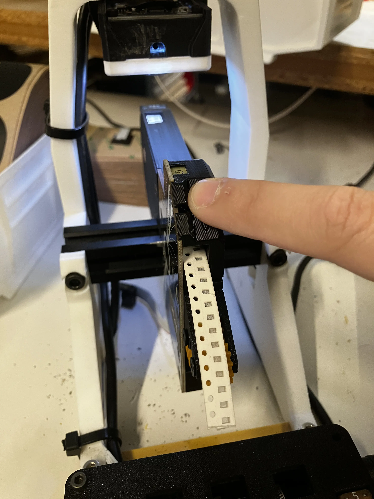

Outgoing Quality Control (OQC)
Test Feeder with Gundam
-
Launch the Gundam Application by entering the commands shown in terminal.
2. Load feeder into the
gundam-qc-jigby installing it onto the orange/yellow feeder slot.Confirm correct programming
If the feeder LEDs flash white when installed onto the slot, your feeder has old firmware and will fail to pass the subsequent tests. If this is observed, unplug the respective feeder and update its firmware before resuming regular process flow.
- The Gundam application window should be open and have an option for a drop down menu.
- Choose the option that correlates with the kind of feeders you are working with. There is differences on how 8mm & 12mm runs through Gundam.
- The test will give a set of instructions and have you answer a few questions about how the feeder is responding.

Depending on if you're working with the 8mm or 12mm will change the second part of the testing.
-
Second test for 8mm Feeders is running tape through feeder and letting program check the variance.

-
Second test for 12mm Feeders is listening for friction and making sure the wheel doesn't spin too diagonally.
Hold it Partner
With the 8mm feeders, sometimes the Gundam test will stop and state that there is an "absurd y variance" or "could not find void in tape". Either unload and load the feeder to try again, or try using the second Gundam station.
If any of the tests have failed, rework the feeder as needed to address issues
If a feeder is failing to pass Gundam checks after more than 10 minutes of rework activity, set it aside and revisit later.
Proceed onward if all tests show PASS results
Install 8mm-feeder-sticker/12mm-feeder-sticker
-
Install
feeder-sticker-application-jigon the backside of the feeder- It should sit snug on the feeder without being able to move around
2. Adhere the right-side of
8mm-feeder-stickeror12-feeder-stickerto the feeder while using the top-left corner pocket offeeder-sticker-application-jigto align it into position -
Remove the
feeder-sticker-application-jigand rub the sticker to ensure it is fully adhered to thefeeder-frame
Cosmetic Inspection
After completing all prior assembly and testing work, CHECK EVERY BULLET on EVERY FEEDER:
- Release Lever moves freely with a snappy action
- Release Lever does NOT move laterally
- Flexure buttons click easily and are not mushy
- If any feeders have mushy buttons they can be reworked quickly with a heat-gun. See Lucy for details!
- Reset button clicks easily
- Fiducial board is inserted
- Fiducial board does NOT have any excess glue
- Diffusion board is inserted in the correct orientation
- All screws are flush with the print/PCB they're mounted into
- Drive motor is flush with the back face of the frame
- Cosmetic sticker has been applied over the drive motor
- Version number sticker has been applied to the PCB
- Drive-wheel-shaft-collar is flush or sub-flush to the surface of the drive-motor-cover
peel-worm-gearis glued on at the appropriate depthpeel-worm-gearis not able to slide off the peel motor shaft- Drive wheel is securely tightened onto drive shaft
- Drive wheel cannot move laterally (drive motor securely mounted into frame)


If all final checks are OK, the feeder may proceed forward to packout